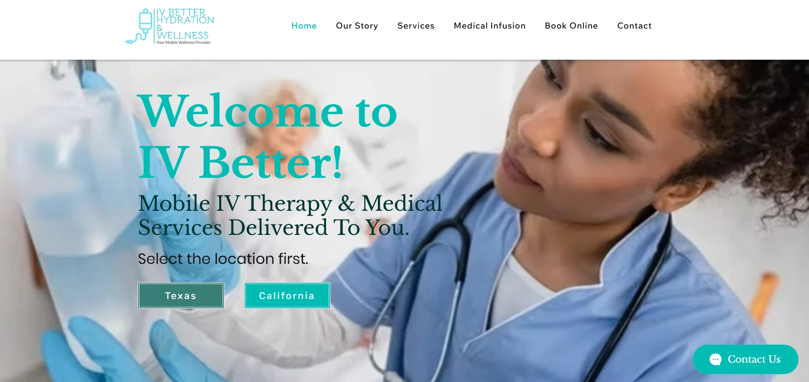
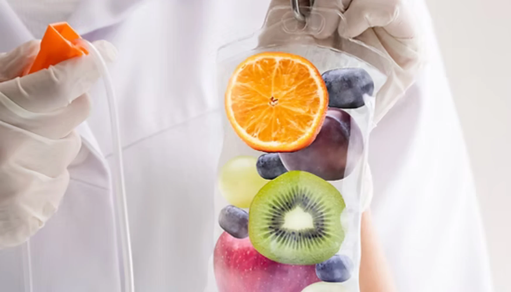
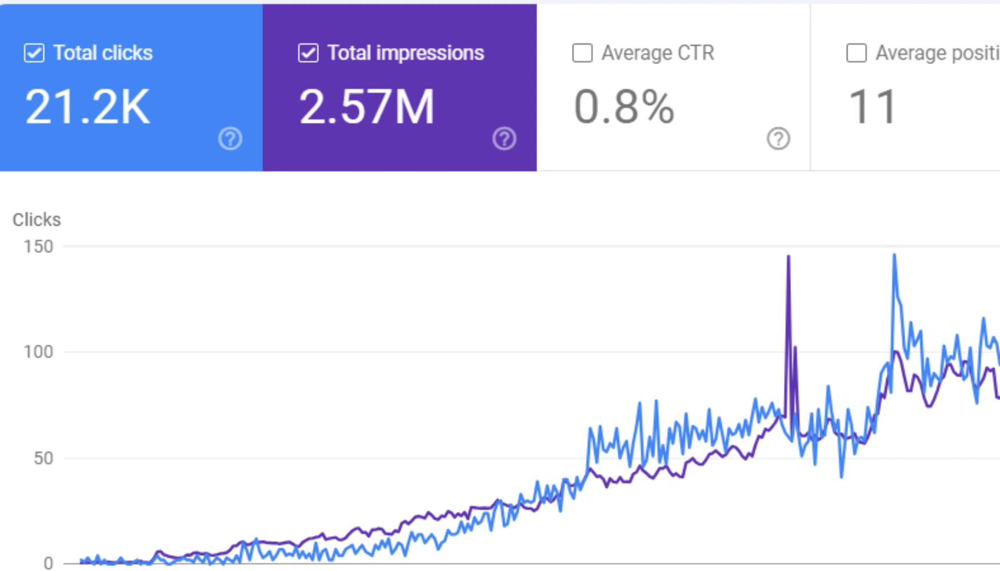
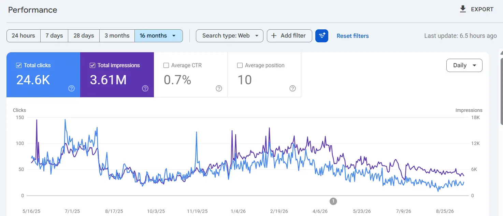
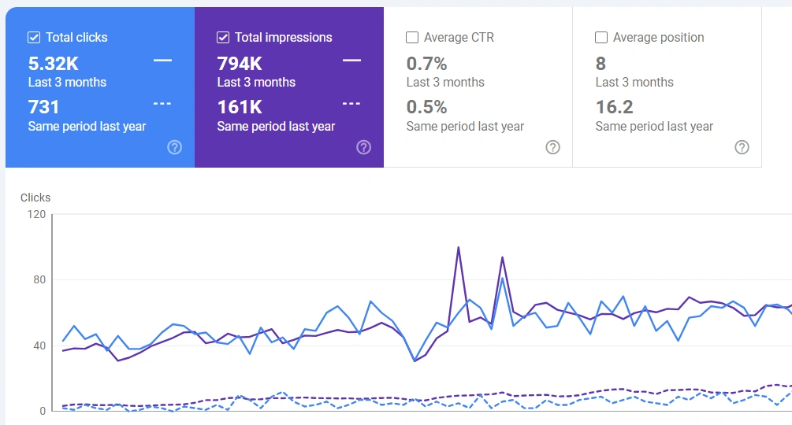
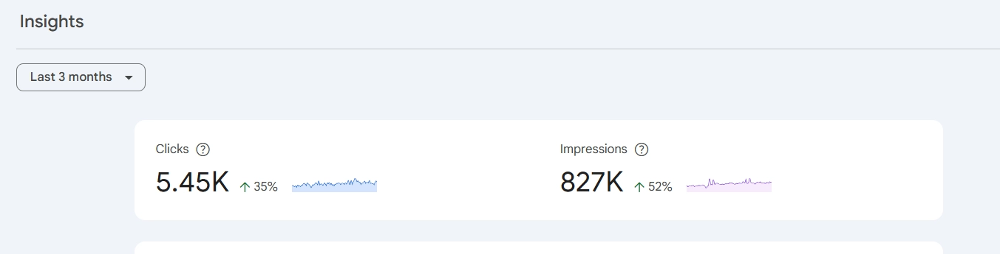

01
High-volume health queries were underutilised
Searches around hydration safety, IV use for kids, and daily intake limits were generating demand, but the content was not fully positioned to dominate those topics.
IV Better already had an online presence, but its organic opportunity was much bigger. Through intent-driven SEO, stronger authority signals, and better content structure, the brand reached 2.57M impressions and 21.2K organic clicks.

The brand had demand in the market, but important search opportunities around hydration safety, IV therapy, medical infusions, and wellness intent were not being captured at full scale.
After reviewing the website and search data, we found several opportunities that were preventing the business from reaching its full SEO potential.
Searches around hydration safety, IV use for kids, and daily intake limits were generating demand, but the content was not fully positioned to dominate those topics.
As a medical service brand, IV Better needed stronger trust, expertise, and authority signals to compete in sensitive health-related search results.
People were searching educational and safety-focused questions, but the content needed clearer and more direct answer structures.
Core service pages were not fully supported by interconnected articles that could strengthen topical authority in IV hydration and wellness.
Although impressions were strong, headlines, meta descriptions, and page structure could be improved to win more clicks from search results.
Thousands of people were searching hydration and safety questions every month. The bigger issue was positioning IV Better to capture and convert that demand consistently.
Instead of chasing quick wins, we built a solid structure that could grow sustainably through service pages, location pages, authority signals, and search-focused content.
We created strong pages for IV hydration, medical infusions, wellness injections, and individual service locations to improve local relevance.
We improved existing pages and added new content targeting health queries, safety concerns, and educational search intent.
We strengthened expertise, trust, and authority through clearer medical content structure, trust-focused elements, and stronger brand credibility.
Titles, descriptions, and page headings were improved to better match search intent and increase click-through rates.
Related content was interlinked and supported with authority-building work to strengthen IV Better’s overall topic relevance.

After the SEO work was implemented, IV Better saw clear growth in clicks, impressions, and visibility across high-intent hydration and wellness queries.




We did not rely on shortcuts. The growth came from building pages around search intent, improving authority signals, and structuring the site to support both services and informational queries.
IV Better’s SEO growth came from solving the right problems: weak topical support, underused health queries, limited authority signals, and content that did not fully match search intent. With the right strategy, the brand achieved millions of impressions and strong organic click growth in a competitive health space.
Review the SEO growth